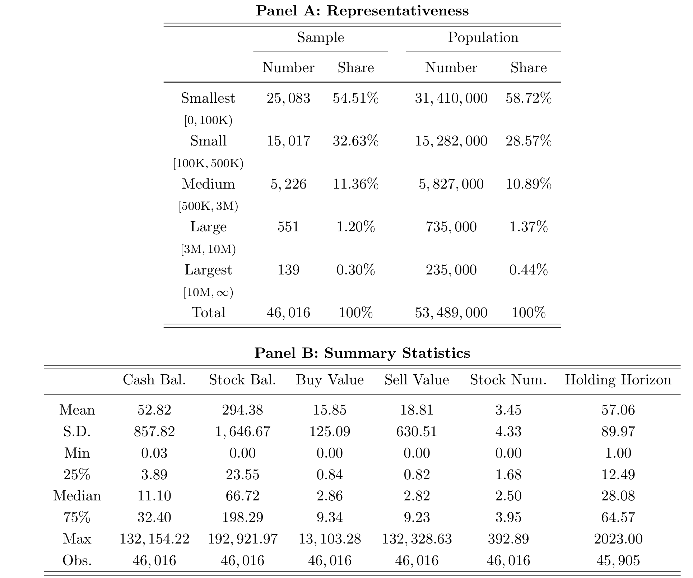
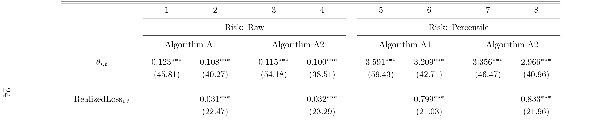
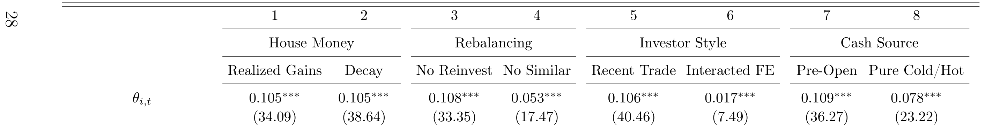
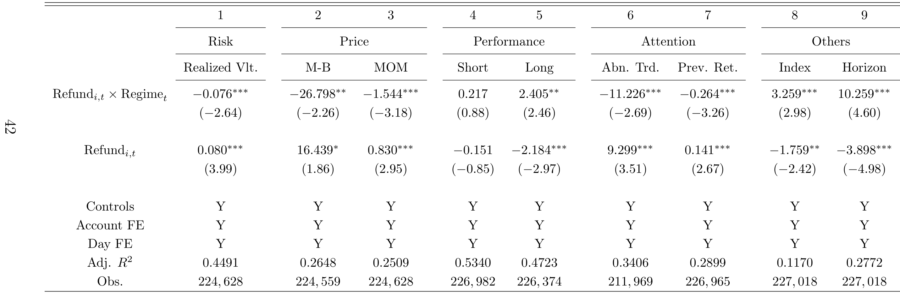
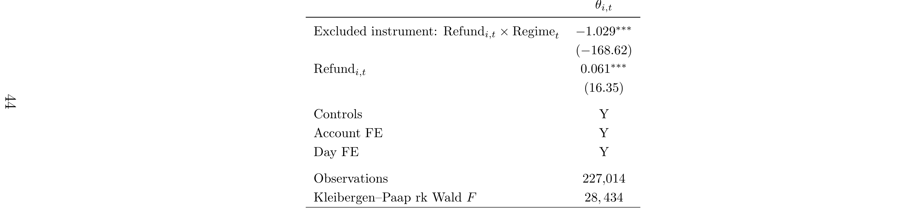
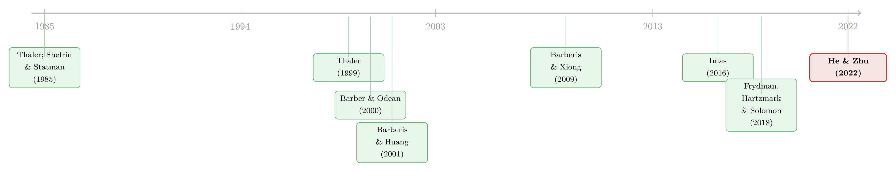

钱的温度：当「一块钱永远等于一块钱」不再成立
这篇文章我读的是 He and Zhu (2022, forthcoming in JFQE), Portfolio Choice with Non-Fungible Brokerage Cash。它用 46,016 个中国散户的逐日持仓与银证转账记录证明了一件颠覆教科书的事：券商账户里的现金并不是「同质可替代」(fungible) 的——刚从储蓄账户转进来的钱是「冷」的，刚卖股票回笼的钱是「热」的，而投资者会用更冷的钱去买更安全的股票。作者把这种属性压缩成一个取值在 $[0,1]$ 的「现金温度」(cash temperature) 状态变量，并借助中国 2016 年 IPO 打新改革这个自然实验，把它从相关性推到了因果。
1 引言：一块钱真的永远等于一块钱吗？
先做一个思想实验。假设有两位投资者，账户里都躺着 5 万元现金，持仓也一模一样。唯一的区别是：第一位的这 5 万元，是昨天刚从银行储蓄账户转进券商的；第二位的这 5 万元，是昨天刚把一只股票卖掉回笼的。现在他们都要拿这笔钱去买股票——标准的组合选择 (portfolio choice) 理论会怎么说？
标准理论的回答干脆利落：两人会做出完全相同的决策。因为在教科书的世界里，可投资财富 (liquid wealth) 是一个充分统计量 (sufficient statistic)，钱就是钱，每一块钱都和另一块完全可替代。资金「从哪里来」这种历史信息，被认为对最优决策毫无影响。这就是货币的可替代性 (fungibility) 假设，它如此自然，以至于我们几乎从不去质疑它。
然而 He and Zhu 这篇论文要说的，恰恰是这个假设在券商账户里站不住脚。第二位投资者——用「热钱」的那位——会系统性地买入更风险的股票。一块钱并不永远等于一块钱；它带着体温，而这个体温会被刷新、会衰减，最终塑造了散户的选股行为。
这篇文章我想围绕一个核心反复讲透：作者是如何把「钱从哪来」这个看似虚无缥缈的心理学直觉，先测量成一个干净的状态变量，再识别出它的因果效应，最后理性化成一个可以纳入定价的模型的。这三步——测量、识别、理性化——构成了整篇论文的脊梁。
2 一支温度计：把「钱从哪来」变成状态变量
要研究一个东西，先得能测量它。作者的第一步，是给资金的来源属性安一个温度计。
直觉很简单：来自稳定来源（储蓄账户、打新冻结资金池退款）的现金是冷的；来自风险资产变现（卖股票、分红、卖其他风险资产）的现金是热的。一个投资者在某一天的「现金温度」\(\theta_{i,t}\in[0,1]\)，衡量的就是他此刻可动用的现金里有多「热」。\(\theta=0\) 表示全是冷钱，\(\theta=1\) 表示全是热钱。
但真正让这个框架不落俗套的，不是这个静态标签，而是它的动态。心理账户 (mental accounting) 这条文献，从 Thaler (1985, 1999) 起就在记录人们如何「组织、评估、追踪」自己的钱，并由此违反可替代性。可那些经典场景——把工资和奖金分开花、把退税当意外之财——有一个共同特征：被贴上标签的钱花一次就离开了记账系统。券商账户完全不同：由于散户频繁交易 (Barber and Odean (2000)),现金在账户里反复地进、出、再循环，规模巨大。这就带来了一个老文献从未认真处理过的预测——标签会随时间衰减，又会在资金被循环利用时被刷新。
作者用三条「维持性假设」(maintained assumptions) 把这套动态钉死：
- T1（容器温度固定）：储蓄账户、风险资产这些「容器」(container) 各自的温度是外生且恒定的，不随流入流出而变。
- T2（目的性配置时的温度同化）：现金一旦被有目的地放进某个容器，它日后离开时就继承那个容器的温度，与它更早的历史无关——这是一个马尔可夫 (Markovian) 式的设定。注意「目的性」很关键：闲置在券商账户里、没有被刻意配置的现金，不会自动重置标签。
- T3（温度衰减）：标签一旦贴上，就以速率 \(\beta\in[0,1]\) 向基准值 0 衰减。这刻画的是记忆的模糊与近因效应 (recency)，呼应 Nagel and Xu (2022) 的「衰退记忆」(fading memory)。
这里有个容易被忽略却很重要的概念区分：作者刻意区分了「容器」(container) 与「心理账户」(mental account)。容器是有客观特征的物理账户或资产头寸，而心理账户是主观分类。从客观的容器出发，作者就不必假设投资者「心里」是怎么分类钱的，而是直接检验一个客观特征——来源的稳定性——能否预测行为。
3 温度的建模：从记账恒等式到状态变量
第二步，是把上面的直觉变成一个能从数据里算出来的公式。这一节我想把这条推导一步步摊开，因为它是整篇论文的发动机。
起点是几条会计恒等式。设 \(B^{\text{start}}_{i,t}\)、\(B^{\text{end}}_{i,t}\) 为投资者 \(i\) 在第 \(t\) 天的日初、日末券商现金余额，\(T^{\text{inter}}_{i,t}\) 为隔夜银证转账，\(T^{\text{intra}}_{i,t}\) 为日内银证转账，\(\text{Trade}_{i,t}\) 为交易导致的现金净变动，则：
$$ B^{\text{start}}_{i,t} = B^{\text{end}}_{i,t-1} + T^{\text{inter}}_{i,t}, \qquad B^{\text{end}}_{i,t} = B^{\text{start}}_{i,t} + \text{Trade}_{i,t} + T^{\text{intra}}_{i,t}. $$
为什么先写恒等式？因为温度的本质，是把「当天可动用的全部现金」按来源拆开、再加权。于是作者把当天的所有资金来源加总成一个有效预算集 \(\text{TotalCash}_{i,t}\)：
$$ \text{TotalCash}_{i,t} = \text{Refund}_{i,t} + \text{TransferIn}_{i,t} + \text{StockSell}_{i,t} + \text{Div}_{i,t} + \text{OtherSell}_{i,t} + B^{\text{end}}_{i,t-1}. $$
右边每一项都非负，分别是：打新退款、银证转入、卖股所得、分红、卖其他资产所得，以及昨日结转的余额。接着按 T2 给每一项贴温度——退款和转入来自冷容器，是冷钱；卖股、分红、卖其他风险资产来自热容器，是热钱：
$$ \text{ColdCash}_{i,t} = \text{Refund}_{i,t} + \text{TransferIn}_{i,t}, \qquad \text{HotCash}_{i,t} = \text{StockSell}_{i,t} + \text{Div}_{i,t} + \text{OtherSell}_{i,t}. $$
唯一棘手的，是那笔结转余额 \(B^{\text{end}}_{i,t-1}\)：它的温度没有被直接定义。按 T2，闲置不重置标签；按 T3，它隔夜衰减。于是温度就成了「全部可动用现金的加权平均温度」，等价地，是热钱的（衰减调整后）占比。这就得到了全篇的核心方程：
读懂这个分式，就读懂了这篇论文的一半。分子的两项把「新刷新的热」与「旧的、正在冷却的热」加在一起，分母把它归一化。\(\beta\) 同时承担了 T2 和 T3 的全部张力：当没有新流入时，分子靠 \(\beta\) 把昨天的温度往下拽；当卖股回笼大笔热钱时，分子的第一项又把温度顶上去。这就是作者所说的「刷新与衰减」(refresh and decay)。
最后还有一个无法回避的细节：当一笔流出（比如买股票）发生时，到底从冷钱还是热钱里扣？作者不强行假定，而是给出两条极端的记账规则把所有可能的行为夹在中间——算法 A1（按比例混合）：冷热钱完全混同，流出按比例从两者扣减；算法 A2（啄食顺序）：冷热钱分开记账，买股票先扣热钱、转出资金先扣冷钱。真实行为大概落在两者之间。所以接下来你会看到，凡是 A1 和 A2 下都成立的结论，就可以被解读为对未知记账规则稳健。
4 算法证据：越「热」的钱，买越险的股
测量工具就位，第三步是看数据怎么说。作者用 \(\theta_{i,t}\) 去解释投资者当天买入股票的风险特征，控制账户与日期双向固定效应 (account and day fixed effects),标准误在账户和日期两个维度聚类 (double-clustered)。
先看样本本身。这套数据的珍贵之处，在于它把 46,016 个散户从 2006 年 1 月到 2016 年 12 月的逐日持仓，和逐日的银证转账明细对上了——后者正是「观测现金来源」得以可能的钥匙。而且券商现金在中国散户的资产里分量不轻：平均每天持有约 52,820 元（约 8,000 美元）现金，相当于其股票市值的约 18%。这意味着「可动用现金的构成」确实是个有意义的状态变量，而非可以忽略的零头。

Table 1: Sample Composition and Summary Statistics
主结果干净利落。在 Table 3 里，把现金温度从全冷 (\(\theta_{i,t}=0\)) 推到全热 (\(\theta_{i,t}=1\)),投资者买入股票的风险（已实现波动率的横截面分位）大约上升 3 个分位点。这个量级是 Frydman et al. (2018) 所记录的「心理账户滚动」(mental account rollover) 效应的大约 3 倍。

Table 3: Algorithm-Based Regression: Risk
更妙的是，这个温度效应在多个维度上同步出现，而且方向高度一致。在 Internet Appendix Table 12 里（用分位变换的稳健版本），同样把 \(\theta\) 从 0 推到 1：账面市值比上升 1.780(t = 31.64),动量 (momentum) 上升 3.390(t = 43.64),随后一个月的收益下降 1.197(t = -19.40),随后一年收益下降 1.007(t = -15.47),异常成交量上升 3.378(t = 41.34)。把这些拼起来看，画面就清楚了：热钱让投资者整体「上头」(risk-on)——追更高的动量、买更贵的股、换手更猛，而代价是随后更差的收益。冷钱则让人更谨慎。
5 但这真的是因果吗？三个对手与一场赛马
讲到这里，一个聪明的读者一定会皱眉：温度是从现金流里算出来的，这难道不是典型的内生性 (endogeneity)？投资者完全可能是先想好今天要买高风险股，才去卖掉旧仓位凑出「热钱」——那样的话，是选股驱动了温度，而非温度驱动了选股。
作者很清楚这一点，于是先打了一场「赛马」(horse race),把三个最有威胁的对手摆上台面逐一拆解：
- 赌场盈利效应 (house money) 与盈亏机制：人在赚钱后更敢冒险。但这是通过投资结果起作用的，而温度锚定的是资金的来源与年龄。作者加入「过去一周/一月的账面与已实现盈亏」控制，并放入交互项 \(\theta_{i,t}\times\text{RealizedGain}_{i,t}\)。
- 心理账户滚动与机械再平衡 (rebalancing)：卖出所得直接拿去买入，可能纯属机械操作。作者剔除当日卖股直接出资的买入，再排除买入与刚卖出标的「相似」（同行业或波动率相近十个分位内）的样本。
- 时变的投资者风格 (investor style)：某些时段投资者本就更活跃、更投机，会同时推高交易型现金和组合风险，制造伪相关。作者加入近一周交易强度控制，甚至把账户固定效应替换为「账户×月」固定效应。
赛马的结果是温度系数顽固地活了下来。在 Table 13 中，对买入股票已实现波动率的回归里，\(\theta_{i,t}\) 的系数在各列稳定在 0.084–0.099 之间（\(t\) 值普遍在 30 上下），即便换成「账户×月」固定效应仍有 0.013(t = 5.88) 显著为正。更关键的是两个交互项验证了框架的动态预测：\(\theta_{i,t}\times\text{RealizedGain}_{i,t}\) 系数为 0.020(t = 11.55)——说明温度效应独立于赌场盈利效应之外；而 \(\theta_{i,t}\times\text{NoActivityDays}_{i,t}\) 系数为 -0.005(t = -8.85)——离上一次热钱注入的无活动天数越多，温度的作用越弱。这正是 T3「衰减」的直接证据。

Table 5: Horse-Race: Realized Volatility
赛马赢了，但赛马终究是「控制更多变量」式的辩护，说服力有上限。这就引出了整篇论文我最欣赏的一步。
6 真正关键的一步：IPO 改革带来的自然实验
要彻底摆脱「是不是我自己凑的热钱」这种反向因果，最干净的办法是找到一个外生地改变资金冷热属性的冲击——而且这个冲击最好和算法、记账规则都无关。作者找到了中国 2016 年 1 月 1 日的打新改革。
故事是这样的。在识别窗口（2014 年 6 月 17 日至 2016 年 12 月 31 日）内，新股因为受到「发行市盈率不得超过 23 倍」的硬性管制而被严重低估，上市首日几乎必然顶格上涨 44%。于是「打新」被普遍视为一张近乎稳赚的彩票。问题在于资金的路径：
- 改革前：合格投资者要按申购全额缴纳保证金，这笔钱被冻结在「打新资金池」里两个交易日，随后大部分退还。
- 改革后：不再需要预缴保证金，也就不存在冻结与退还。
注意打新资金池被作者归类为冷容器。这就制造了一个绝妙的对比：同样是打新失败退回的一笔钱，在改革前它穿过了冷的资金池、被「冷却」过，在改革后它则没有。于是作者用一个双重差分 (difference-in-differences, DiD) 设计，比较打新结果公布日当天，这两种「来源相同、冷热不同」的退款如何影响后续选股。结论与温度框架一致：被冷却过的退款，让投资者随后选股更谨慎。

Table 7: Difference-in-Differences
为进一步堵上残余的内生性，作者还用同一改革做了工具变量 (instrumental variable, IV) 的两阶段最小二乘 (2SLS),用制度变化作为「资金是否穿过冷资金池」的外生工具，其排他性约束 (exclusion restriction) 来自改革本身的行政性、与个体选股意图无关。IV 结果支持了因果解读。

Table 8: Instrumental-Variable Evidence (2SLS)
这一步之所以关键，是因为它完全不依赖 \(\theta\) 的构造：DiD 与 IV 都不需要算法 A1/A2，也就不继承任何记账假设。换句话说，即便你完全不相信那支温度计的刻度，这个自然实验依然告诉你：钱被冷却过，行为就会变冷。测量与识别，在这里实现了漂亮的分工。
7 机制与模型：实验室里的「冷钱」与一个会算价格的温度
到此为止，论文证明了「温度→谨慎」这个事实，但为什么？第四步是给机制一个微观基础。
作者做了一个预注册 (pre-registered)、\(N=405\) 的 Prolific 实验。参与者同时拥有一个储蓄账户和一个券商账户，在阅读两个账户的信息后，被随机分配用其中之一去做一次风险股票选择。实验结果提供了与田野证据互补的因果证据：资金来源确实重要，而且损失厌恶 (loss aversion) 是一个可信的渠道——用「冷」框架时，人对损失更敏感。
这就自然过渡到模型 (Section VI)。作者构建了一个组合选择模型，其核心设定只有一句话，却足以串起全部经验事实：投资者对未来盈亏的敏感度，是随现金温度递减的。直觉上，当你用更热的钱时，损失没那么痛、收益也没那么爽。把这条偏好设定放进静态（短视）与动态两种环境，模型给出一组统一的均衡预测：
$$ \theta\;\uparrow \;\Longrightarrow\; \text{prices}\;\uparrow,\quad \mathbb{E}[\text{returns}]\;\downarrow,\quad \text{risk taking}\;\uparrow . $$
也就是说，温度越高，均衡价格越高、预期收益越低、冒险越多——这与第 4 节里「热钱追动量、买贵股、随后收益更差」的横截面证据严丝合缝。（关于「预期收益从何而来」这个更宏大的问题，可参见《贴现率：资产定价的中心议题》。）动态版本还多给了一个有趣的预测：会内生地考虑「今天冒险会抬高明天温度」的投资者，会出现温度平滑 (temperature smoothing) 的行为。
值得点出的是，作者把这个「资金来源」要素提到了一个相当高的位置：标准组合选择问题历来有三大要素——信念 (beliefs)、偏好 (preferences)、现金数量 (budget),而这篇论文主张资金的来源 (source) 是被遗漏的第四个要素。这个模型还顺带给了一组「老大难」现象一个统一视角：有限市场参与 (Mankiw and Zeldes (1991), Campbell (2006)) 与过度交易 (Barber and Odean (2000)) 的并存、对冲击的过度反应 (De Bondt and Thaler (1985)),以及并非由基本面驱动的价格波动 (Shiller (1992))。
8 文献脉络
把这篇论文放回它的家谱里，能更清楚地看到它的位置。
源头是心理账户。Thaler (1985, 1999) 奠定了「人会给钱贴标签、从而违反可替代性」的整套语言，但其经典场景里的钱花一次就离场。与此并行，Shefrin and Statman (1985) 的处置效应、De Bondt and Thaler (1985) 的过度反应，把行为偏差搬进了资产市场。进入个股层面后，文献的重心长期落在「盈亏如何在风险头寸间被携带」：Barberis and Huang (2001) 把心理账户与损失厌恶接进个股收益，Barberis and Xiong (2009) 重审处置效应的偏好解释。

而真正贴近本文的，是把视线从「股票」转回「钱本身」的那一支。Barber and Odean (2000) 提供了散户高频换手、资金在账户里反复循环的事实基础；Imas (2016) 发现已实现损失（相对账面损失）后冒险更少——但请注意，He and Zhu 的结论与之正交：在他们的框架里，交易回笼的现金无论盈亏都算「热」流入，并与更多而非更少的冒险相联系。最直接的对手与基准则是 Frydman, Hartzmark, and Solomon (2018) 的「滚动心理账户」——本文的温度效应量级约是它的 3 倍。He and Zhu (2022) 的独特之处，是把心理账户从「一次性贴标签」推进到「循环资金的反复重贴标签」，并第一次把这种标签的刷新与衰减做成了一个可测、可识别、可定价的动态状态变量。
顺带一提，本文研究的是散户在「买什么」上的行为偏差，这与本博客此前评述的散户买卖决策研究气味相投（可参见《外推者与逆势者：预测偏差如何塑造散户的买卖决策》）。
9 我的判断
先说贡献。我认为这篇论文最漂亮的地方，是测量与识别的解耦。它先用一支构造透明、且用 A1/A2 两个极端把记账假设夹住的温度计，把一个心理学直觉变成了可回归的变量；又用 IPO 改革这个完全不依赖温度计刻度的自然实验，独立地验证了因果方向。任何一篇行为金融论文，只要它的核心变量是「构造出来的」，就逃不开「你是不是把答案编进了定义里」的拷问；而本文给出的回答是教科书级的——把因果识别建立在一个外生的、与构造无关的制度冲击上。再加上田野、实验、模型三条腿都站得住，这是一份相当完整的证据组合。
再说担忧。第一，DiD 与 IV 都挂在 2016 年 IPO 改革这一个事件上，识别窗口又恰好与一段极不寻常的行情（2015 年的暴涨暴跌）高度重叠，平行趋势 (parallel trends) 在这种剧烈波动里是否真的成立，我希望看到更细致的事前趋势图与安慰剂检验。第二，「打新资金池是冷容器」这一归类是整个自然实验的支点，但它本身是作者的设定而非数据事实；如果投资者其实把「即将稳赚的打新资金」当成最热的钱，结论的符号都可能反转——这一点值得更直接的辩护。第三，外部有效性。中国市场被选中有其道理（无资本利得税、清算系统精确记录现金、恰逢 IPO 改革），但散户主导、涨跌停板、打新近乎无风险套利，这些特征也让人怀疑同样的温度效应在机构主导、可卖空的成熟市场里还能剩下多少。
后续我最想看到的，是把「现金温度」搬出零售股市这个温室。如果资金来源真的是组合选择的第四要素，那它就不该只活在散户的券商账户里。下面几个方向是我自己会想做的。
评论与延伸（Q&A + 研究方向）
几个可能的疑问
Q：现金温度和「赌场盈利效应」(house money) 到底有什么区别？
关键在于「锚」不一样。赌场盈利效应锚在投资结果——你是赚是赔；现金温度锚在资金的来源与年龄——这块钱是卖股来的还是储蓄来的、进来多久了。论文用 Table 13 的交互项 \(\theta\times\text{RealizedGain}\)（系数
0.020,t = 11.55）证明了即便控制住盈亏，温度仍独立起作用，两者并非一回事。
Q：θ 是从现金流里算出来的，会不会就是内生的——投资者先想好买什么、再去凑相应的钱？
这正是论文最在意的反向因果担忧。算法回归这一支只能靠层层加控制来缓解；真正的解法是第 6 节的 IPO 改革，DiD 与 IV 都不依赖 θ 的构造，因此不受「自己凑热钱」这种反向因果污染。识别的可信度主要来自那个自然实验，而非温度计本身。
Q：两个算法 A1/A2 给出的温度不一样，结论会不会取决于记账假设？
这是作者主动防御的点。A1（按比例混合）与 A2（啄食顺序）是两条极端规则，真实行为应落在两者之间。论文报告主结果在 A1、A2 下定性一致，因此可被解读为对未知的、投资者特定的记账规则稳健。当然，「夹逼」不等于「证明」，但这是在不可观测日内顺序约束下能做到的稳妥处理。
Q：这和处置效应、Imas (2016) 的 realization effect 是一回事吗？
不是，甚至方向相反。Imas (2016) 发现已实现损失后冒险减少；而在本文里，卖股回笼的钱（无论盈亏）都算热钱，并与更多冒险相联系。处置效应和 Barberis-Xiong 那一支讲的是「盈亏如何在股票间被携带」，本文讲的是「钱本身的构成与年龄」，研究对象从股票挪回了现金。
Q：「越热越冒险」会不会只是动量追逐或再平衡的伪相关？
这正是第 5 节赛马要排除的。论文剔除当日卖出直接出资的买入、排除买入与刚卖出标的相似的样本、加入交易强度控制、甚至用「账户×月」固定效应吸收时变风格，温度系数依然稳健显著（最严格设定下仍有
0.013,t = 5.88）。再加上不依赖构造的 IPO 实验，机械再平衡难以解释全部证据。
Q：为什么偏偏选中国市场？换个市场结论还成立吗？
中国市场提供了三个便利：股票投资无资本利得税（排除税收驱动的卖出时机）、清算系统能精确记录现金余额、以及恰好落在样本期内的 IPO 改革。代价是外部有效性存疑——散户主导、有涨跌停板、打新近乎无风险，这些都让人无法直接把结论外推到机构主导、可卖空的市场。
几个可能的研究问题与提案
1. 公司债交易台的「现金温度」。 经济故事：债券基金或自营台的可投资金来自三类截然不同的来源——投资者申购/赎回、持仓票息到账、以及卖券回笼。若来源真的影响风险偏好，那么用「冷」资金（新申购）建仓时应更偏好高评级、短久期，用「热」资金（卖券回笼）时则更敢做信用下沉或拉久期。可行性：中等。需要把 TRACE（或国内交易商持仓）与基金现金流/申赎数据匹配；识别可借鉴本文思路，用赎回冲击（如评级下调引发的被动赎回）作为冷热资金的外生来源。这与本博客关注的信用市场流动性主题契合。
2. 外资持有人的「冷热钱」与跨境组合选择。 经济故事：对一个本地市场而言，跨境流入（如北向资金、QFII 新增额度）天然是「冷」的外生注入，而本地交易回笼的资金是「热」的。若温度框架成立，跨境冷钱进场时应更偏好蓝筹/低波动标的，本地热钱则更投机。可行性：中等偏低。北向资金有逐日、逐标的的明细，但要把「资金温度」落到个体投资者层面很难——更现实的做法是在标的层面检验「冷钱占比高的股票随后波动率更低」。这恰好连接外资持有人与流动性两个我自己在追的主题。
3. 温度从个体行为到市场流动性的传导。
经济故事：论文已发现热钱与异常成交量上升相关（Table 12 中 3.378）。一个自然的下一步是问：当某只股票的边际买家整体处于「高温」状态时，其市场层面的流动性（买卖价差、深度、价格冲击）是否系统性恶化？这把一个微观行为偏差升级成了流动性的横截面预测。可行性：高。所需的成交量、价差数据是标准的，难点在于构造标的层面的「持有人温度」加总指标。
4. 赎回压力下的基金经理是否也会「按温度选股」。 经济故事：把单元从散户换成专业管理人。面临大额赎回时被迫卖券回笼的现金是「热」的，而新申购流入是「冷」的；若连受过训练的机构都表现出温度依赖的风险选择，可替代性假设的失效就远不只是散户的故事。可行性：中等。需要基金逐日申赎与持仓变动数据；识别可利用「与基金主动决策无关的赎回冲击」（如指数再平衡、姊妹基金的流动性外溢）作为外生的资金来源变化。
参考文献
- Barber, B. M., & Odean, T. (2000). Trading is hazardous to your wealth: The common stock investment performance of individual investors. Journal of Finance 55(2), 773–806.
- Barberis, N., & Huang, M. (2001). Mental accounting, loss aversion, and individual stock returns. Journal of Finance 56(4), 1247–1292.
- Barberis, N., & Xiong, W. (2009). What drives the disposition effect? An analysis of a long-standing preference-based explanation. Journal of Finance 64(2), 751–784.
- Campbell, J. Y. (2006). Household finance. Journal of Finance 61(4), 1553–1604.
- De Bondt, W. F. M., & Thaler, R. (1985). Does the stock market overreact? Journal of Finance 40(3), 793–805.
- Frydman, C., Hartzmark, S. M., & Solomon, D. H. (2018). Rolling mental accounts. Review of Financial Studies 31(1), 362–397.
- He, X., & Zhu, N. (2022). Portfolio choice with non-fungible brokerage cash. Journal of Financial and Quantitative Analysis (forthcoming).
- Imas, A. (2016). The realization effect: Risk-taking after realized versus paper losses. American Economic Review 106(8), 2086–2109.
- Mankiw, N. G., & Zeldes, S. P. (1991). The consumption of stockholders and nonstockholders. Journal of Financial Economics 29(1), 97–112.
- Nagel, S., & Xu, Z. (2022). Asset pricing with fading memory. Review of Financial Studies 35(5), 2190–2245.
- Shefrin, H., & Statman, M. (1985). The disposition to sell winners too early and ride losers too long: Theory and evidence. Journal of Finance 40(3), 777–790.
- Thaler, R. H. (1985). Mental accounting and consumer choice. Marketing Science 4(3), 199–214.
- Thaler, R. H. (1999). Mental accounting matters. Journal of Behavioral Decision Making 12(3), 183–206.